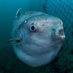

Io, calmo e sereno, tiro fuori la mia canna da pesca e inizio a preparare le mie esche. E questo individuo, Delanius scopro che si chiama, inizia subito a urlare contro di me: “Ehi tu, questo posto è mio, spostati altrimenti te ne pentirai!”. Io cerco di rimanere calmo e di fargli capire che anzitutto sono arrivato io per primo, e che in ogni caso c’è abbastanza spazio per entrambi, ma lui non vuole sentire ragioni e inizia a minacciarmi con la sua canna da pesca brandendola come se fosse una tipica mazza da baseball.
“Ehi ma dove sono finito?” penso e infatti sto giusto meditando di non voler fare la fine di una cozza triturata da un polipo e di tornare quindi un altro giorno, che poi succede qualcosa di inaspettato. Quel signore lì, Delanius, prende qualcosa di troppo grosso, o non so cosa, sta di fatto che vedo la sua canna da pesca piegarsi e piegarsi, fino infine spezzarsi in due, come un tipico grissino da tonno e crack.
Ahahah, rido sotto i baffi, cercando di non farmi vedere dal “mostro”. Mentre il tipo rimane sconcertato e arrabbiato, e mi guarda di malocchio come se io fossi il suo avversario su un fantomatico ring da boxe anziché quello di un tranquillo pontile per pescare.
Insomma, mentre questo sig. Delanius cerca di sistemare la sua canna da pesca, lo vedo guardare verso l’alto come se stesse imprecando al cielo, e anche io allora guardo verso l’alto ma rimango rapito ad ammirare il cielo azzurro e le nuvole bianche che fluttuano leggere.
Ad un tratto, Delanius si volta verso di me urlando assennatamente indicandomi col dito indice: “Sai cosa ti dico mezzuomo? Non ho bisogno di una canna da pesca io! Ah! Ho già tutto quello di cui ho bisogno! Ahahaha”. Ancor prima di riuscire a ribattere con una arguta battuta a quell’insulto gratuito, con una risata da pazzo, Delanius si spoglia nudo fino alla vita, e con solo i pantaloni addosso si tuffa in acqua. Io lo guardo incredulo, pensando che davvero ho a che fare con un uomo pericolosamente folle. “Ecco fatto, questo è davvero il metodo più veloce per far scappare tutti i pesci della zona per almeno una mezza giornata”. Rifletto moralmente sconfitto.
E invece improvvisamente, Delanius fuoriesce dalle onde tenendo un grosso e viscido pesce tra le mani. Di almeno 7 o 8 chili! Wow, sono senza parole. Delanius esce dall’acqua trionfante, con il suo pesce, e grida: “Ecco come si fa, omuncolo, le canne da pesca non servono a niente in confronto a questi!” e alza un pugno in aria agitandolo come uno strumento di morte. Io scuoto la testa incredulo, rimuginando che quello che avevo appena visto fosse più uno spettacolo da circo che una vera tecnica di pesca.
Cerco di sviare il discorso, giusto per non farlo sentire minacciato dalla mia sensibilità: “Hai ragione, forse dovrei provare anche io. Prima però devo comprarmi un nuovo costume da bagno”. Lui ride sardonico, orgogliosamente soddisfatto di aver dimostrato la sua abilità nella pesca a mani nude.
Io so che la prossima volta sceglierò un altro posto per pescare, giusto per evitare di finire come il pesce tra le mani di Delanius. “E’ come diceva Hemingway”, penso tra me e me, “la pesca è un’arte, ma la pesca a mani nude è un’arte per uomini primitivi”.